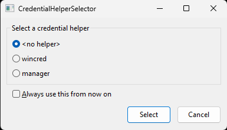
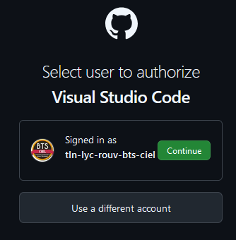
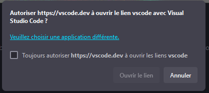
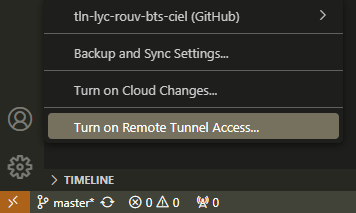

Installation de la version portable pour Windows
- Lien : git
- Copie de la version portable dans le répertoire App de VSCodeEveryWhere :
├── App
│ ├── AppInfo
│ ├── FirstRun
│ ├── msys64
│ ├── PortableGit
│ └── VSCode
Intégration de Git à VSCode
- Modification du fichier VSCodePortable.ini pour actualiser le chemin git :
GIT=%PAL:AppDir%\PortableGit
- Redémarrage de VSCodeEveryWhere : la commande git est disponible dans le terminal pwsh ou cmd.
Intégration du terminal Mintty de msys2 dans VSCode
ctrl + shift + P -> User settings (JSON)
Ajouter dans le fichier settings.json les lignes suivantes :
{
"terminal.integrated.profiles.windows": {
"GIT PORTABLE": {
"path": "cmd.exe",
"args": [
"/c",
"D:\\PortableApps\\VSCodeEveryWhere\\App\\PortableGit\\git-bash.exe"
]
}
}
Le terminal git s'ouvre dans une nouvelle fenêtre.
En ligne de commande :
- on vérifie le chemin du répertoire home dans la console git ;
- on configure le nom et le mail ;
- le fichier .gitconfig est créé dans le répertoire home
$ echo $HOME
/d/PortableApps/VSCodeEveryWhere/Data/misc/Git/home
$ git config --global user.name "user_name"
$ git config --global user.email "user_email"
$ git config --list --global
$ cd ~
$ ls -la
total 10
drwxr-xr-x 1 ardui 197609 0 Oct 9 22:39 ./
drwxr-xr-x 1 ardui 197609 0 Oct 9 20:47 ../
-rw-r--r-- 1 ardui 197609 164 Oct 9 22:35 .bash_history
-rw-r--r-- 1 ardui 197609 99 Oct 9 21:20 .bash_profile
-rw-r--r-- 1 ardui 197609 137 Oct 22 2023 .bashrc
-rw-r--r-- 1 ardui 197609 56 Oct 9 22:37 .gitconfig
-rw-r--r-- 1 ardui 197609 20 Oct 9 22:39 .lesshst
-rw-r--r-- 1 ardui 197609 137 Oct 22 2023 .zshrc
Authentification
# configuration par défaut (<no helper> coché et fenêtre du gestionnaire à chaque connexion)
$ git config --list --global
...
credential.helperselector.selected=<no helper>
...
$ git config --list --system
...
credential.helper=helper-selector
...
# exemple pour se connecter au dépôt distant lm35 :
$ git remote add https://github.com/tln-lyc-rouv-bts-ciel/digital_thermometer_lm35
Le gestionnaire d'authentification git apparaît : 
Après avoir cliqué sur "seclect" dans le gestionnaire : 

Après avoir recliqué sur "select" dans le gestionnaire, vscode mémorise l'accès au compte github : 
Trois types d'identification (voir le "Gestionnaire d'identification" Windows 11 pour les clés créées):
- <no helper> ne crée pas de clé
- wincred crée une clé (git:https://109131905@github.com)
- manager crée une clé (git:https://github.com)
VSCode se connectera alors automatiquement au compte github associé.
# pour voir l'identifiant éventuellement créé (si clé wincred ou manager)
$ git credential-manager github list
# pour retirer une valeur mutliple dans la configuration de git
$ git config --unset-all <value>
# Pour ne plus avoir la fenêtre du gestionnaire d'identification de git cocher la case "Always use this from now on" dans le gestioonnaire et sélectionner une option.
$ git config --list --global
...
# si <no helper> sélectionné :
credential.helperselector.selected=<no helper>
# si wincred sélectionné
credential.helperselector.selected=wincred
...
$ git config --list --system
...
# si <no helper> sélectionné :
credential.helper=
# si wincred sélectionné
credential.helper=!"D:/PortableApps/VSCodeEveryWhere/App/PortableGit/mingw64/libexec/git-core/git-credential-wincred.exe"
...
# si déconnexion du compte github dans vscode, pour faire réapparaître le gestionnaire :
$ git config --system credential.helper helper-selector